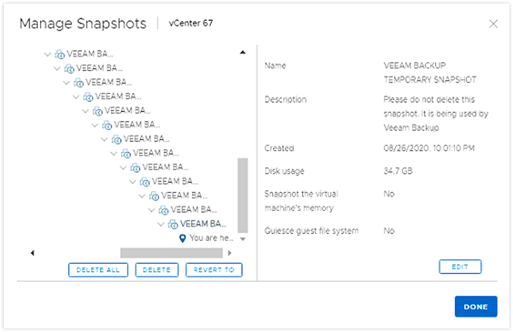

From Zero to Enterprise-Grade: Building Workload Protection at Scale
Designing vSAN Data Protection from scratch — a 3+ year journey spanning snapshot management, cross-datacenter replication, and a global monitoring dashboard for IT admins who can't afford to get it wrong.
My Role
Sole Product Designer — end-to-end, 0 to 1
Timeline
3+ years across 3 releases
Team
PM, Engineering Architects, UI Engineers, Field Engineers
vSphere Client · VMware Cloud Foundation Operations
Users
Infrastructure Admins managing hundreds of workloads
Section 01
01
Background & Problem
Businesses run on data — and losing it can mean lost revenue, regulatory penalties, or worse. Enterprises running on VMware's infrastructure platform organize their operations inside virtual machines (VMs) — software-defined environments used to run applications or store business data. Protecting those VMs meant relying on a backup mechanism called snapshots: essentially a "save point" that captures the state of a running system so it can be restored if something goes wrong.
The problem was that the existing snapshot tool was designed for short-term, occasional use — not as a serious data protection strategy. IT administrators knew it was unreliable but had no better option built into the platform they were already running.
Why the existing tool kept failing people
Each time a save point was created, the system had to track every change made since — and the longer that list grew, the slower everything got. VMware's own guidance was to keep no more than 2–3 save points at a time, for no longer than 72 hours. In practice, admins told us their systems would grind to a halt just trying to clean them up. The tool meant to protect their data was itself becoming a risk.

The existing snapshot manager — a deeply nested chain of identical entries, each carrying a warning not to delete it. This is what "managed" data protection looked like in practice.
"I hate to say it like this, but people forget about snapshots. It causes performance-related issues and all that. So we never used snapshots."
— Infrastructure Administrator, user research session
On top of the performance problems, there was no central place to manage protection across an organization's systems — no scheduling, no automated cleanup, no visibility into what was protected and what wasn't. Admins were doing it by hand, or not doing it at all.
A new foundation made something better possible
VMware's next-generation storage architecture (vSAN ESA) solved the underlying technical problem — redesigning how save points were stored so they no longer degraded performance. Independent testing showed less than 2% performance impact regardless of how many save points existed, and cleanup became up to 100× faster. The constraint that had made serious data protection impossible was gone.
The Opportunity
With the performance problem solved at the infrastructure level, there was now a real opportunity to build a first-class data protection experience — one that gave IT teams centralized, scalable control over how their critical systems were protected, without the risk and manual overhead they'd learned to live with. This was the product I was brought in to design from scratch.
Section 02
02
My Role & Approach
I was the sole product designer on vSAN Data Protection for over two years, embedded in a cross-functional team with a product manager and engineering architects. I owned the end-to-end design process — from early concept exploration and information architecture through detailed interaction design, usability testing, and iterative refinement across three release cycles.
What this work actually required
Enterprise product design at this level isn't primarily about interface craft — it's about accessing information that hasn't been written down yet. The most important inputs to this project didn't live in a ticket or a spec. They lived in the tension between two teams with competing priorities, in the workaround an admin had quietly built into their Monday routine, in the strategic direction still forming in a VP's head.
My role was relational as much as it was design. I was a node in a human network — connecting engineering architects who rarely talked to the people running their software, surfacing the organizational dynamics that shaped what was technically feasible, and sitting with users long enough to create the conditions for them to say the things they hadn't said yet. That last part — the unknown unknowns — is where the real design problems live.
A note on process
Much of what I navigated on this project — the unspoken team tensions, the user behaviors that never made it into a bug report, the strategic pivots still in flux — can't be mined from a dataset. It surfaces through trust, presence, and relationships built over time. That's the work underneath the work.
How I gathered user insight
Rather than relying solely on PM-filtered requirements, I pursued direct user insight through multiple channels: formal usability test sessions, customer feedback sessions at industry stands where I could observe real reactions to screens, and regular conversations with field engineers who worked with IT admins daily and understood the gap between what the product offered and what users actually needed.
Phase 1
vSphere 8.0u3
MVP — Local Snapshots
Protection Groups
Snapshot scheduling & retention
VM-level protection status
vSphere Client integration
Phase 2
vSphere 9.0
Replication & Global View
Async replication (1-min RPO)
Failover / Failback workflows
Cross-datacenter dashboard
Cluster & vCenter summary views
Phase 3
vSphere 9.1
Upcoming
New capabilities in progress
Continuing iteration
Section 03
03
Design Challenges
Designing this feature from scratch over two years surfaced five distinct design problems — each requiring a different combination of systems thinking, user research, and stakeholder navigation.
Challenge 01
Building the IA from scratch
Dual entry points — policy-first vs VM-first — and figuring out how they should relate to each other.
Challenge 02
The mental model conflict
Resolving the tension between vSphere and vSAN snapshots — technically different, identical to users.
Challenge 03
Integration, not isolation
Designing across 5 existing vSphere surfaces to deliver coherence without net-new engineering cost.
Challenge 04
Challenging the geo-topology
Using unmoderated research to redirect a leadership-driven design direction for the global dashboard.
Challenge 05
Protection at scale & edge cases
Designing for fleets of hundreds of VMs, including the critical-but-overlooked deleted VM restore flow.
01 — Building the Information Architecture from Scratch
The most fundamental structural challenge was figuring out how to organize a feature that had two natural — and equally valid — entry points. Administrators needed to think at two levels simultaneously: the fleet level (defining policies across many VMs) and the individual VM level (understanding one machine's protection status). These weren't just two screens. They represented two different mental models, and the wrong choice would mean admins constantly getting lost trying to bridge them.
Screenshot placeholder
Protection Groups list view — showing policy-first IA with VM assignment
02 — The Mental Model Conflict
The PM and engineering team viewed vSphere Snapshot and vSAN Snapshot as clearly distinct: one was legacy, one was architecturally superior. Their instinct was to keep them separate so users would naturally migrate to the better technology. I pushed back. My argument: users don't think in terms of underlying storage architecture. To them, it's just VMware's snapshot feature.
"I have three different groups within my server environment — my Linux team, my security team, and my Windows team. Most of them use it as a small tool, just in case backup type of thing."
— Infrastructure Administrator
Users were deeply accustomed to right-clicking a VM to take a snapshot. That gesture was already embedded in muscle memory. Research confirmed that users consistently treated vSAN snapshots as an enhancement of existing behavior — not a separate feature requiring a new workflow. Armed with that evidence, I escalated with my manager, successfully engaging both vSphere and vSAN product and UX leads to align on a shared direction: users should have the same accessible path for taking snapshots, regardless of the underlying technology.
Option 1
Unified entry point
Same gesture, same context for both snapshot types. More intuitive, lower cognitive load. Ideal for users but technically complex to unify given separate appliance architecture.
Option 2 — Selected
Visible in existing contexts
Separate paths, but vSAN snapshot actions surface in the same places users already look. More scalable for vSAN-specific operations and achievable within eng constraints.
Shipped
This was a conscious compromise — but the right one. We moved the needle meaningfully toward consistency without overpromising what engineering could deliver.
03 — Designing for Integration, Not Isolation
One of the most impactful decisions I made was choosing not to design vSAN Data Protection as a standalone feature. Enterprise IT admins move fluidly between VM management, storage monitoring, and health dashboards — under time pressure. I worked closely with engineering to audit existing vSphere Client surfaces and identify where protection context could naturally appear.
↗
Right-click context menu
Most-used gesture in vSphere Client. Protection actions without leaving the primary workflow.
□
VM summary page
Protection status and last snapshot at the individual VM level, where admins already investigate.
⊞
Snapshot manager panel
vSAN snapshot info within the familiar panel — continuity without a parallel UI.
◎
Cluster & vCenter views
Fleet-level compliance status: how many VMs are protected across the cluster.
♥
vSAN Health view
Protection issues surface as alerts where admins already monitor storage health.
↺
Payoff
Users encounter data protection in context. Eng reuses existing frameworks — no net-new build cost.
04 — Challenging the Geographic Topology
When planning the global data protection dashboard, product leadership had strong momentum behind a visually striking geographic map view. It looked impressive in demos. I had reservations — prior research indicated geographic views offered limited operational value to infrastructure admins who think in terms of clusters and replication relationships, not physical coordinates.
Rather than asserting this based on intuition, I collaborated with our user researcher to design an unmoderated concept test via UserZoom, comparing two approaches directly.
71%
Participants preferred the relational cluster view over the geographic map
70 valid responses collected within one week after iterating on the study design to reduce completion friction. Admins already had geographic locations internalized — what they needed was granular, actionable replication health data.
The findings reframed the conversation with leadership from "which looks better" to "which serves the actual user." The outcome: cluster-level visualization as the operational default, with an optional geo-view preserved for executive and marketing contexts — flexible viewing for different use cases.
05 — Protection at Scale & the Deleted VM Edge Case
Designing for hundreds of VMs meant the protection model needed to be declarative, not reactive. I designed vSAN Protection Groups as the core organizing unit — grouping VMs with similar protection requirements under a shared policy with automated snapshot creation and deletion. This shifted the mental model from "remember to take a snapshot" to "define what should be protected, and let the system handle it."
Screenshot placeholder
vSAN Protection Group configuration — scheduling and retention policy UI
One edge case that proved critical: when a VM is accidentally deleted, it disappears from the inventory with no obvious path to recovery. I proposed a dedicated "Removed VMs" page — listing all VMs with locally stored snapshots, including those no longer in active inventory — giving admins a single, discoverable place to find and restore deleted machines without escalating to the storage team.
The label itself went through iteration: beta testing showed users couldn't find the page when it was called "Missing from clusters." Renaming it to "Removed VMs" resolved the discoverability issue immediately — a small change with outsized impact.
"It's pretty neat. I was able to delete a VM, restore, and files were back... it's a quick option versus going to the storage department for a full restore."
— Beta User
Section 04
04
Outcomes & Reflection
vSAN Data Protection shipped in vSphere 8.0u3 and expanded significantly in vSphere 9.0. The feature is live and publicly available as part of VMware Cloud Foundation.
0 → 1
Shipped feature — from no data protection product to enterprise-grade capability in vSphere 8.0u3
70+
Usability test responses collected in a single week via UserZoom unmoderated study
2+
Years of sustained design ownership across 3 major releases, with 9.1 in progress
Looking back, I would have pushed harder for earlier customer exposure in the replication design phase. The snapshot work benefited from a usability study that shifted our direction; the replication workflows were more engineering-constrained and I felt the user perspective came in later than it should have. In complex enterprise products, the window to change fundamental interaction patterns narrows quickly once engineering momentum builds — earlier validation, even rough, is worth the effort.
What this project reinforced
The most valuable design skill I exercised here wasn't visual — it was sustained advocacy under technical pressure. The decisions I'm most proud of (the mental model alignment, the geographic topology research, the integration strategy) all required bringing evidence to conversations where the easier path was to defer to engineering constraints or leadership preference. Research isn't just for learning — it's for changing minds.